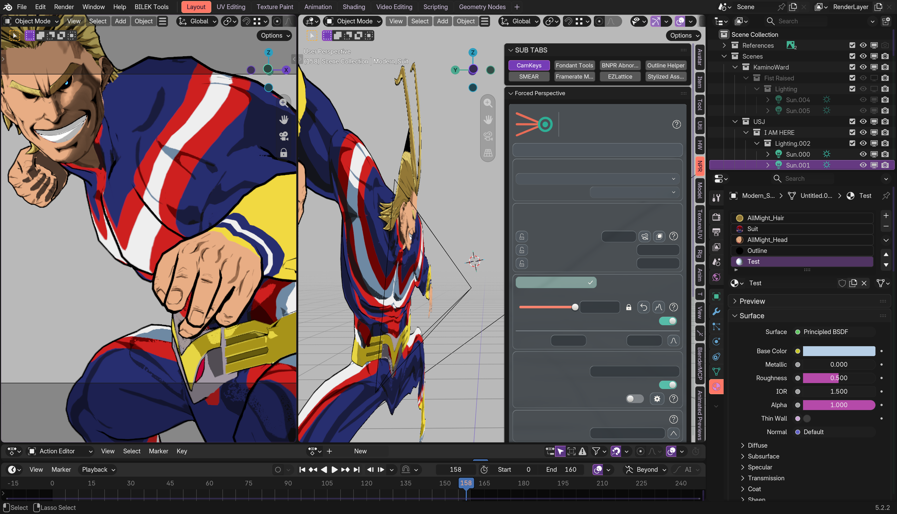
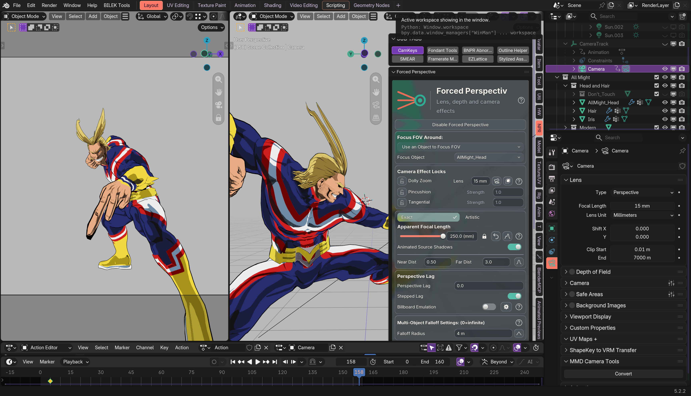

BUI now retires old panel rendering resources before a file load and recreates them afterward. Live All Might text restored; no scene save. File-load tests pass on seven Blender release families, 4.2–5.2. Physical Windows replay remains pending.
The user continued navigating between captures; these demonstrate text recovery, not matching geometry.

